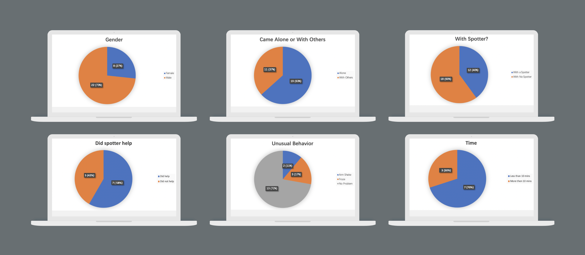

Bench press upgrade.
Executive summary.
When performing the bench press exercise, the user is at risk of bar dropping on themselves, leading to serious accidents. In order to keep themselves safe, users often go with a partner who assists them with their workouts. This, however, is an option that may not be readily available to everyone. To find out if we could make the bench press safer and more convenient, we went to the UTM gym to observe how students interact with the bench press. After our initial observation, we came up with a design for a bench press machine that would keep users safe while eliminating the need for a spotter. We also designed an interactive panel attached to the side of the bench press, which was refined over multiple rounds of user testing that allowed users to select between two exercise modes.
Design highlights.
- The system consists of two modes: an assist workout mode and a regular workout mode.
- The system automatically calculates risks through weight information and sends warning to users when safety threshold value is reached to minimize chance of injury.
User observations.
User observations analysis.
Problem
The main problem we observed is that people do not have someone to
bring with them to act as a spotter for the bench press and as such did not have anyone
to prevent injuries or assist them with training.
Solution and environment sketch.
1. It consists of three main components added to make the experience safer for users:
metal cables attached to the bar, a scale connected to the cables and an interactive display panel.
The cables extend from the inside of the machine and are attached to both ends of the bar by metal
clasps. The weight on these cables is constantly monitored by a scale built into the machine.
- The “training” mode provides a safe way for users to experiment with weights heavier than they are accustomed by performing one of the spotter's functions which is as a training assistant.
- In the “regular” mode, when a user gets tired or unexpectedly drops the bar, the weight on the cables increases, and if it goes beyond the weight threshold, the cables lock in place.
16
Interviews
12
Usability Tests
40
Participants
3
Sessions
Usability testing.

Study Format: In-person
Scenario 1: You are new to the redesigned bench press and have never used it before. How would you go about learning how to use the bench press with the display panel.
Scenario 2: You have used the redesigned bench press already or are someone that uses it on a routinely basis. How would you go about learning how to use the bench press with the display panel.
Design prototype, site map & design changes.
- Removed the keypad from the mode selection screen: On this screen, the number pad serves no purpose and is a source of confusion as the user is not presented with any input fields.
- Weight threshold: We noted that this was the most common source of confusion for our users. Since the concept was not clearly defined, some had to take the words at face value and act based on their own understanding. In our redesigned UI, we added a tooltip that explains what the weight threshold is.
- Clearer labels: Unclear labeling made it difficult for users to understand the purpose of some text boxes and buttons. We addressed this problem by using more descriptive labels such as “start workout” in place of “start” and “total weight to lift” in place of “weight”.
- Prompts: In the initial design of our panel, there were no prompts that indicated when the calibration of the machine was complete, which made users unsure of when they could begin their workout. To fix this problem, we added a pop-up that notified a user that the set up was complete and the machine was ready to be used.
- Feedback: Some users expected some sort of feedback about how the workout went, so they could determine if the machine had helped them and if so, by how much. In our redesign, we added an additional screen that shows the feedback of users’ workouts.